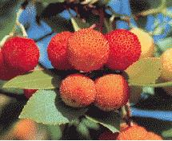
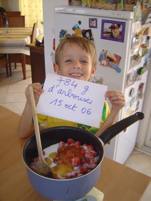

Recette n°97 : gelée d’arbouses du lac de Tolla

Ingrédients : (pour 3 pots de gelée)
- 2 kg d’arbouses bien mûres
- 1 kg de sucre

Préparation :
- faire chauffer
les arbouses dans une casseroles en remuant pour qu’elles se «
dissolvent » en une pâte liquide
- filtrer cette
pâte à travers une passoire à mailles fines en
pressant avec le dos d’une louche afin d’extraire le maximum de jus
- mélanger ce
jus au sucre (la proportion sucre/jus peut varier de 50% à 1000%
selon goût)
- faire cuire doucement
ce mélange jusqu’à obtention d’un sirop encore assez
liquid
- mettre en pots avec
bouchons vissés et retourner pour stériliser l’air
confiné, le temps du refroidisssement
Observations :
- recette exécutée le 26 octobre 2006 à Porticcio
avec des arbouses cueillies
au lac de Tolla alors que nous étions à Porticcio chez
Marie-hélène et Frédéric
pour les vacances de Toussaint
- cette
gelée, de couleur orangée, rappelle le coing et
l’abricot ; elle es
excellente en tartine ou sur de tartes (cf. recette n° 98)